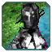
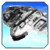

Total Mayhem Lite
This mod discards most units found in Total Mayhem. Remaining units have been rebalanced and redesigned to fit vanilla FAF unit balance.
Permission to use Total Mayhem assets granted by Uveso.
Credit to Burnie, the original Total Mayhem author, and Uveso, who currently maintains it.
Thanks to Exotic_Retard for unit details code.
Mod Dependency
This mod requires Total Mayhem mod to be downloaded, as unit assets are pulled from there.
Total Mayhem needs to be DOWNLOADED, but NOT ENABLED. If you enable it, both units from the original and rebalanced units will be present.
Strategic Icons
This mod adds custom strategic icons for some of the units. Unfortunately it is not yet possible to mount textures from mod folders. Until it's been implemented,
follow below instructions to manually install custom strategic icons. This step is not required, but units with custom icons won't be visible when zoomed out
if this step is not completed.
Copy "texturepack.nxt" file from this mod folder into FAF assets directory, by default here:
C:/ProgramData/FAForever/gamedata
Note, ProgramData folder is hidden by default.
To download the mod, go to Mods section in the FAF client, search for Total Mayhem Lite and download.
Hope you enjoy playing it! -- Wodzu_93
Unit Guide
Here you can familiarize yourself with new units this mod adds. Each unit will have a description about what that units is, its pros and cons, as well as how to use it yourself or play against it.
Aeon - Buildings
T1 and T2 Anti-Navy Defense
Static defense, meant to keep enemy navy away from your shoreline. T1 version significantly outranges and outguns Frigates, while T2 version is competitive with Destroyers.
T2 version is also amphibious. These guns can only fire at surface ships, and cannot engage or be ordered to fire upon ground units.
Aeon T2 version fires three depth charges per salvo, making it capable of targeting underwater targets. It is also equipped with a small shield dome.
Finther - T2 Perimeter Monitoring System
Cheap structure built on a Hydrocarbon deposit. Provides significant visual detection radius with no energy upkeep. Can be built underwater. Once you reach T2 tech and have your first T2 Power Generator, reclaim your Hydrocarbon Power Plant and construct this building in its place. This building type is available to all factions, with no functional differences.
 Mizura - T2 Mass Strongpoint
Mizura - T2 Mass Strongpoint
This is a frontline alternative to T2 Mass Extractor. Fairly expensive, it sacrifices 33% of T2 Mass Extractor income for significantly more Health and support/defensive capabilities. Building can be capped with Mass Storage to increase its extraction rate, just as regular Mass Extractors. Highly recommended as a starting point for a firebase.
Aeon version packs a small shield dome. It's big enough to protect adjacent T1 Mass Storage buildings, as well as 12 T2 defensive buildings. Weapon mounted on it is a rapid-firing Quantum EM Autogun. This weapon does low damage, but has an EMP effect which makes is capable of stunlocking single enemy unit.
How to use
- Counter to T1 and T2 Experimental units - pair with a bank of Oblivion T2 PD around it. Mizura stunlocks the experimental while Oblivion PDs kill it over time. Manually assign target if needed.
- A compliment of 4 Mass Storage, 2 Oblivion PD, 1 Flak and Volcano TMD makes for a respectable firebase for reinforcing contested mass points.
How to fight against
- Use T2 Mobile Missile Launchers. Even if there is a Volcano TMD underneath Mizura's shield dome, missiles are likely to hit the bubble.
- Seraphim T2 Teleport Ambush Bots can teleport inside its shield dome, dealing direct damage to the building.
- If there is not too much AA weaponry around, Halcyon T1 Experimental Engineering Craft can reclaim this structure from the air.
- Use Aeon T2 gunships to quickly focus fire and destroy Mizura with their high alpha damage.
- Attack with large ground force - this building can only attack one target at a time, and deals low damage by itself.
Orb - T3 Advanced Shield Generator
This shield generator must be built on Hydrocarbon deposits, but in exchange it generates an enormous shield dome, with great strengh and regeneration. Shield dome is large enough to cover entire main base in most cases. Shield cannot be effectively assisted.
How to use
- Highly effective against standoff weapons like T3 static and T4 experimental artillery or Novax satellites.
- Build T3 static shields around it for protection against units.
How to fight against
- Use shield-breaking weapons, such as Aeon Absolver or Seraphim T2 Experimental unit.
- Gunships and strategic bombers can be used effectively, as they will fly underneath shield bubble and attack the building directly.
Aeon - Air
Musca - T1 Torpedo Bomber
Light torpedo bomber, suited to destroying frigates and T1 submarines. Depth Charges ignore torpedo defense. Unit has a pair of direct fire air-to-ground guns which can be used to hunt down engineers.
Halcyon - T1 Experimental Engineering Craft
Heavy-duty flying engineer. Has considerable HP, moves fairly slowly, can build, reclaim and repair. Building suite consists of entire T1 category, plus T2 static defenses. Has short range sonar.
Upgrades
- Nano-Repair System - Provides moderate HP regeneration.
- Rapid Farbricator - Increases build rate.
How to use
- Combination of high HP and flying means this unit can access and survive conditions regular engineers cannot. Take advantage of this to reclaim wrecks direcly from active combat zone.
- Unit has enough buildpower to use its Reclaim capabilities offensively, by directly reclaiming enemy units. Use this to cull enemy land army quickly.
- Reclaiming ignores shielding - if enemy firebase has no or little AA, use this unit to get rid of enemy defences by reclaiming them.
- While unit has no AA itself, its large HP pool allows it to withstand fire from small interceptor groups for some time. Build static T1 or T2 AA when caught by interceptors.
- Use its flying nature to go slighly behind the front lines and build T1 walls to cut off reinforcements or deny way out to retreating enemy ACUs.
How to fight against
- Build more Interceptors. Killing this unit quickly requires more air forces than usual threats.
- Upgrading to T2 tech for Flak weaponry is an effective method - flak deals damage quickly to this unit due to its size.
- Cybran T1 Experimental Assault Bot upgraded with AA missiles can keep this unit away as reclaiming experimentals is not fast enough to survive counterfire.
- Aeon T2 Experimental AA Gunship can snipe this unit with an Overcharge shot, killing it instantly.
 Bishop - T2 Experimental AA Gunship
Bishop - T2 Experimental AA Gunship
Air control unit. Has significant AA firepower, both in direct fire guns as well as missiles, in addition to large HP pool. Carries on-board radar as well.
Special Feature - Overcharge Sniper Cannon
Unit can fire an Overcharge shot at air targets in range. Cannot toggle auto-fire. Requires 5000 stored Energy minimum per shot. Damage scales with stored Energy.
Upgrades
- Improved Rangefinder - Significantly increases range of Overcharge.
- Recharge Booster - Increases rate of fire for gun-based AA weapons.
How to use
- Snipe high priority air targets - such as transports, strategic bombers or gunships.
- Take advantage of the range upgrade for Overcharge - you can safely snipe enemy air units from outside of enemy air defenses, effectively preventing your enemy from building up a substancial air force.
- Keep it close to your ACU or land forces to deny air-to-ground attacks from enemy air forces.
- Avoild large groups of T2/T3 air fighers - despite its large HP pool, this unit will still go down quickly if swarmed with enemy fighters in sufficient numbers.
How to fight against
- Large numbers of T2 or T3 fighters will overwhelm this unit with sheer alpha damage on a first pass.
- Build ground-based AA units. This unit is completely defenceless against ground-to-air weaponry.
- Seraphim T3 Shield Planes can soak up shots from its Overcharge, protecting your own air force from snipes.
- Cybran T4 Experimental Anti-Air Bot will quickly kill this unit with its anti-air weaponry.
Aeon - Land
Lintea - T1 Medium Tank
Sturdier alternative to the Aurora. This unit has more health and equipped with personal shield. Weapon is slow firing, with highly damaging shots, but has low range.
Pumice - T2 Mobile Artillery
This unit is an excelent building destroyer - weapon is nearly pin-point accurate and very fast firing. Low health, low acceleration.
How to use
- Anti-Shield - thanks to its rapid fire, even one will take down unassisted shield generators, as very short delay between shots will completely prevent shields from recharging.
- Load them into air transports for eco raiding - extended range compared to T1 Mobile Light Artillery makes them very good at taking out Mass Extractors.
How to fight against
- Projectiles are very easy to dodge - order your units to change direction othen to avoid fire. Once in firing range, these units go down quick.
- Attack from the air with gunships or fighter-bombers, or even T1 bombers - HP on these units is very low for a T2.
Akuma - T2 Experimental Assault Bot
Direct fire brawling experimental. Decent HP, respectable firepower and speed. Cannot cross water.
Upgrades
- Reacton Refractor - All weapons have increased area of effect.
- Personal Shield Generator - Installs personal shield.
How to use
- Direct combat with other T2 experimentals or T2 armies is the best use of this unit.
- Weapon AoE upgrade is useful for destroying structures and point defense - install it before base assaults.
How to fight against
- Air attack with T2 gunships will kill it, since Akuma has no AA.
- Retreating into water bodies will make you safe from this unit.
Rhyolite - T3 Siege Tank
Expensive and resilient tank. Packs the highest alpha damage for T3 direct fire land units, albeit on very short range. While the hull of the unit is barely stronger than T2 tanks, it has high capacity personal shield, providing it impressive lasting power if allowed to recharge. Unit is amphibious and will drive on a seabed when ordered to enter water bodies. Unit is also equipped with short range sonar.
Special Feature - Submerged Fire
Unit can fire its weapon into, from and inside water bodies, freely attacking ships and subs from both land and seabed.
How to use
- On land, charge them into enemies - Percivals and Bricks have more range, but are slower, so these units will catch up to them while soaking damage with the shields.
- On maps with shallow pools, like Canis, drive them into the water for protection - enemy units won't be able to fire at them, while Rhyolites can fire at enemies without issues.
- While naval units will almost universally outrun them, submerged T4 experimentals won't - and make great targets due to Rhyolites retaining full firepower while underwater.
How to fight against
- Stunning weapons ignore personal shields - any unit with EMP weapons will stun them.
- Gunships will reliably whittle them down.
- Direct fire T4 experimentals like Monkeylord, Ythotha, Blood Asp, Hades or Megalith will kill them due to range and DPS advantage when on land.
- When underwater, any subs, non-UEF destroyers or Coopers will eventually kill them with torpedoes due to both greater range and speed. Kite them until they are dead.
Tachylite - T3 Mobile Missile Defense
Mobile TMD. Singificantly more effective than T2 projectile-based static missile defense. Can reliably intercept reinforced projectiles, such as 'Billy' tactical nukes. Counters missile based units, such as T2 Mobile Missile Launchers, UEF Spearhead or Cybran Scarlet. Can also intercept anti-air tactical missiles from Cybran T3 Strategic Interceptors.
Aeon version hovers, which allows it to be used at sea.
Flash - T4 Experimental Hover Tank
Very fast experimental unit, optimized for raiding. Its weapon fires a single projectile that then splits into a horizontal volley of pellets. Substandard DPS and range for a T4 unit. Fairly high build cost. Short range OMNI sensor counters Cybran Cloak-Stealth units.
Special Feature - Shield/Cloak Alternate
Unit can switch between shielded and cloaked state with a toggle on the orders panel. Shield drains Energy, while Cloak does not.
How to use
- Raiding is the main job of this unit - use its very high speed and scattershot weapon to bypass enemy defenses and destroy entire groups of vulnerable targets, such as Mass Extractors, Mass Fabricators, Power Generators or Engineers.
- Avoid enemy T4s. This unit does not perform well in direct combat against direct fire T4s.
- Scattershot weapon is good at dealing with lower tech armies, killing multiple units at once in one salvo.
How to fight against
- This unit is too fast to catch it with any ground vehicle - use gunships and bombers to intercept it.
- Keep at least one direct fire T4 near your economy - a Galactic Collossus, Monkeylord or Ythotha will fairly easily kill this unit.
Hades - T4 Experimental Siege Bot
Very high cost super-heavy class experimental. Main role is long-range bombardment, but unit can perform decently at various roles due to well rounded stats. Main weapon is high-damage long-range artillery cannon with long firing cycle, while direct fire weapons consist of two beams and two batteries of Oblivion Cannons. Unit also has AA missiles and more than double HP of a Galactic Collossus. Its OMNI sensor range slightly exceeds Hades's artillery range - no unit can hide.
Special Feature - Short Range Teleport
Unit can perform short-range hops with teleportation. Requires significant Energy, but charge time is fairly short. Range indicated by dull yellow ring.
How to use
- Hades can be used similarly to Fatboys, attacking enemy bases and units from long range. Artillery cannon packs enough punch to kill unupgraded ACUs with one shot.
- Unit will fight in 1 vs 1 against enemy T4's very well due to combination of high damage output and high HP.
- Teleport can be used to bypass terrain obstacles, such as cliffs or mountain ranges.
- Hades can use teleport kiting - get in range of artillery weapon, then schedule a teleport order behind - enemy unit(s) will approach, trying to get into firing range. Then,as they close distance, teleport activates and puts more distance between Hades and the targets - allowing you to safely attack with artillery cannon again. Repeat until enemies are destroyed.
How to fight against
- Weak AA weaponry - attack with Gunship swarm or large group of Strategic Bombers.
- Air T4 experimentals willl kill a Hades, but require some time or multiple passes to kill it.
- Use multiple cheaper T4s, such as Monkeylord, to attack it. For the price of a Hades, you can build 2 to 3 cheaper T4 units that will have more combined DPS than Hades does.
- Unit is slow, and cannot fire backwards with the artillery cannon while torso is facing forward - spooking out your enemy to turn and flee with the Hades eliminates most of its damage output.
- 1 full-scale Nuke is enough to destroy it.
Aeon - Sea
Gheel - T2 Naval Hover Artillery
Cheap and fragile anti-navy unit. Fires a Depth Charge over large distances in the air, that then splash into water and home in on targets. Secondary weapons are short-ranged Chrono Torpedoes and direct fire guns.
How to use
- Depth Charges ignore anti-torpedo weaponry and cannot miss - use these against pesky units that dodge your Exodus Destroyer's shots.
- Unit is an outstanding submarine hunter, provided you have Sonar coverage - it cannot be attacked by torpedoes, while it can attack enemy subs without issues.
- Use these units when enemies have air control and use many T2 Torpedo Bombers - Gheels cannot be attacked by torpedoes.
How to fight against
- Since Gheels are small and mobile, long range shots miss othen - use fast Frigates to close distance, or ships with beam weaponry, like Seraphim T2 Destroyer.
- Attack from air with Gunships, T1 Bombers or Aeon T1 Torpedo Bombers.
- Use mobile shields to soak up shots from them.
Cybran - Buildings
 T1 and T2 Anti-Navy Defense
T1 and T2 Anti-Navy Defense
Static defense, meant to keep enemy navy away from your shoreline. T1 version significantly outranges and outguns Frigates, while T2 version is competitive with Destroyers.
T2 version is also amphibious. These guns can only fire at surface ships, and cannot engage or be ordered to fire upon ground units.
Cybran T2 version is equipped with anti-torpedo weaponry as well.
Hacker - T2 Perimeter Monitoring System
Cheap structure built on a Hydrocarbon deposit. Provides significant visual detection radius with no energy upkeep. Can be built underwater. Once you reach T2 tech and have your first T2 Power Generator, reclaim your Hydrocarbon Power Plant and construct this building in its place. This building type is available to all factions, with no functional differences.
Pen - T2 Mass Strongpoint
This is a frontline alternative to T2 Mass Extractor. Fairly expensive, it sacrifices 33% of T2 Mass Extractor income for significantly more Health and support/defensive capabilities. Building can be capped with Mass Storage to increase its extraction rate, just as regular Mass Extractors. Highly recommended as a starting point for a firebase.
Cybran version mounts a dual-purpose Microwave Laser, capable of targeting both ground and air units, with high damage output. Much stronger than regular Cerberus PDs.
 Triple Threat - T3 Heavy Point Defense
Triple Threat - T3 Heavy Point Defense
The heaviest, most armored and most damaging Point Defense building in the game. Can be built only on Hydrocarbon deposits. Mounts triple-barrelled Heavy Proton Cannons, capable of severly damaging or outright obliterating T4 land experimentals.
Cybran - Air
Firefly - T2 Combat Fighter
Intermediate tier air-to-air combat unit. Carries a signature Cybran stealh system, preventing enemies from aquiring a radar signature. Unit uses missile bursts, with high damage but long fire cycle. Flight pattern is set to hit and run rather than dogfighting.
Invader - T2 Experimental Gunship
Decent air raiding experimental. Has rapid fire guns and AA missiles. Standard air speed.
Special Feature - Stealth Field
Unit can stealth itself and other friendly units in the area.
Upgrades
- Rail Launchers - AA weapon has increased range and rate of fire.
- Microwave Laser Generator - Installs air-to-ground laser weapon.
How to use
- Use stealth field to escord transports undetected into enemy territory.
- Try to snipe enemy ACU. Install laser upgrade beforehand for more DPS.
How to fight against
- Scout for this unit with air scouts, or OMNI capable units.
- Keep flak units where you suspect this unit could attack.
- Use fighters to destroy it. AA weaponry is quite weak unless upgraded.
Eagle-Eye - T3 Strategic Interceptor
Specialized interceptor. Regular air-to-air capabilities are subpar, instead unit constructs and fires tracking anti-air tactical missiles at air targets from long range, dealing very high damage per shot with area of effect. Equipped with personal stealth system. Significantly faster than Air Superiority Fighters, but less agile.
Special Feature - Anti-Satellite
Tactical missiles fired by this unit can track and damage Novax satellites, dealing miniscule amounts of damage to them. It takes approximately 20 missiles to destroy a Novax Satellite.
How to use
- Avoid directly engaging enemy ASF, Eagle-Eyes easily lose against them.
- Keep few of these units around to intercept high priority air targets, such as T3 Gunships, T3 Strategic Bombers or loaded air transports. Most of these require 2 missiles to take down.
- Tactical missiles can be used to thin enemy ASF swarm before your own ASF engage them - utilize split-attack command (SHIFT + G).
- Fire missiles at air T4 units to predamage them, or even completely destroy if Eagle-Eyes are fully loaded and in sufficient numbers.
How to fight against
- Keep your air grounded if enemy tries to snipe it - missiles do vastly reduced (-92%) damage to grounded targets.
- Missiles are classified as tactical - meaning TMD weaponry can intercept them. If possible, keep T3 mobile TMD land units nearby your aerial operation area.
- ASF can dodge missiles from these units with proper micro, as missile tracking is sluggish. If you see these coming, perform sharp turns at right moments.
- Use OMNI coverage paired with forward placed, ground based AA units to try to destroy these, T3 AA being the best option.
- Seraphim T3 Shield Plane is a direct counter to Eagle-Eyes, with both shield and on-board TMD.
Cybran - Land
Aes - T1 Cloak Bot
Slightly weaker, but also cheaper, variant of the Mantis Bot. Has a cloaking system, for raiding engineers/mass extractors in the early game before radars are built.
Karakurt - T1 Experimental Assault Bot
Punch-packing amphibious bot. Carries a single-target high DPS Microwave Laser, a pair of AoE Heavy Electron Bolters and a guided missile battery. Direct fire weapons are front facing only. Unit can activate personal stealth system, becoming invisible to radars. Can repair itself very slowly.
Upgrades
- Microwave Accelerator - Microwave Laser damage output +50%.
- Nanite Missile System - Installs AA missile weapon.
How to use
- This unit fights well against T1 land units.
- Sneak it into enemy base using stealth.
- Avoid enemy ACUs.
How to fight against
- Overcharge this unit to kill it quickly.
- Flanking works well due to limited weapon arcs - split your land forces and try to get behind it.
- Transitioning to T2 tech in time will make it a no-threat, as T2 land units are much sturdier.
Pyrite - T2 Experimental Cloak Bot
Stealth assault experimental. Has personal cloaking to hide it from visual detection. Uses Aoe direct fire weaponry. Plenty of HP and firepower to fight T1 and smaller T2 unit groups. Slowly self-repairs itself.
Upgrades
- Personal Stealth Generator - Installs always-active stealth. Cloak Energy usage +300%.
- Nano-Repair System - Increases self-repair rate and HP.
How to use
- Upgrade with stealh for an undetectable unit for base assaults. Alternatively, pair this units with Deceivers for similar effect.
- With Nanorepair upgrade, unit becomes good hit-and-run attacker, retreating after an encounter for repairs.
- Avoid enemy ACUs.
How to fight against
- Overcharge this unit to kill it quickly.
- Transition to T3 and build OMNI sensors to counter its stealth.
- Serapthim land and air T2 scouts have OMNI sensors.
- UEF T2 Experimental can be upgraded with an OMNI sensor and fight this stealthed unit directly.
Demon - T3 Heavy Recon Tank
Very fast-moving intelligence unit, equipped with a radar system. Armament consists of AoE Heavy Proton Cannon and a pair of AA missile launchers. Unit can activate combined personal stealth and cloak system, becoming completely undetectable to non-OMNI visual and radar sensors. Weapons are disabled while stealthed.
How to use
- Activate stealth and use them for spotting without being detected.
- Unit can perform sneak attacks into enemy base and kill economy and buildpower, provided OMNI radars had been taken out.
How to fight against
- Use T3 Spy Planes to keep an eye for any potential raids from these units.
- Build more OMNI sensors and have backups in case of snipes.
- AA weaponry is very weak - attacks from air are effective and attackers won't take much counterfire damage.
Scarlet - T3 Rocket Battery
Highly damaging and expensive rocket artillery unit. Moves fast and can attack while on the move. Fires large amounts of rockets per salvo in low arc trajectory over large area. Unit is volatile and will explode if destroyed. Rockets are classified as tactical and can be shot down by TMD weapons.
How to use
- Since rockets are inaccurate, target entire land armies or bases to ensure hits.
- Keep them away and separate from other units, so death weapon won't damage your own units.
How to fight against
- Use T3 Strategic Bombers to kill these units in a single pass.
- Use a combination of mobile shields with mobile TMD. T3 mobile TMD is highly effective and few of them will severly reduce damage from this unit. Remaining rockets will be intercepted by shielding.
Sentinel - T3 Mobile Missile Defense
Mobile TMD. Singificantly more effective than T2 projectile-based static missile defense. Can reliably intercept reinforced projectiles, such as 'Billy' tactical nukes. Counters missile based units, such as T2 Mobile Missile Launchers, UEF Spearhead or Cybran Scarlet. Can also intercept anti-air tactical missiles from Cybran T3 Strategic Interceptors.
Cybran version is equipped with Personal Stealth.
Indigo - T4 Experimental Mobile Cloak Field Generator
Specialized combo unit. Provides area-of-effect cloaking effect in wide radius around itself. Weapons mounted have an EMP effect and can stun one to two targets at a time. Use in combination with other units to fully utilize its potential.
How to use
- Main usage is pairing this unit with a Monkeylord experimental - each unit compliments another's system, making this combination undetectable to non-OMNI sensors.
- Pair with Deceivers to hide entire armies from detection.
- Utilize stun weaponry to lock out high priority units of a lesser tech level.
- Use this unit as a meat shield - it has plenty of HP but little damage output.
How to fight against
- Scout thoroughly and frequently - Indigos won't be used by themselves, and there is nothinig worse than a suprise T4 at your doorstep.
- Increase your OMNI coverage with more buildings - enemies are likely to try sniping your OMNI sensors to sneak this experimental in.
 Consolidator - T4 Experimental Anti-Air Bot
Consolidator - T4 Experimental Anti-Air Bot
Dedicated anti-air unit, meant to provide air control and denial from the ground. Primary weapon fires energy flak pellets over long distance. Secondary AA weapon is a medium range missile launcher. Unit has no notable anti-ground weaponry other than a weak direct fire burst laser. Personal stealth system can hide this unit from radar detection, while OMNI sensor will detect enemy stealth aircraft in close proximity.
How to use
- Use this unit as an escort for your land assaults to keep them safe from air retaliations.
- If close enough to enemy territory, this unit can attack air units inside enemy base without retaliation from point defenses.
How to fight against
- Split your air forces on approach, so this unit won't kill them all with AoE on its weaponry.
- Consolidator is basically defenseless against ground attacks.
Cybran - Sea
Charcaradon Class - T1 Light Destroyer
T1 destroyer. Has more range and damage output that frigates, including a short-range torpedo launcher. Fairly expensive, but can activate stealth, preventing radar and sonar detection.
 Coelacanth Class - T3 Battlecruiser
Coelacanth Class - T3 Battlecruiser
Cybran ship of the line, designed for brawling with lower tech level ships. Packs noticeably more DPS than Galaxy Battleships, albeit on a shorter range. Respectable anti-air weaponry.
Special Feature - Strategic Missile Defense
Unit can construct and fire standard anti-nuke missiles. Rate of construction is significantly lower than stationary Strategic Missile Defense, but can be assisted.
Seraphim - Buildings
T1 and T2 Anti-Navy Defense
Static defense, meant to keep enemy navy away from your shoreline. T1 version significantly outranges and outguns Frigates, while T2 version is competitive with Destroyers. T2 version is also amphibious. These guns can only fire at surface ships, and cannot engage or be ordered to fire upon ground units. Seraphim T2 version has increased DPS compared to other factions.
Uyal Ha-Esel - T2 Perimeter Monitoring System
Cheap structure built on a Hydrocarbon deposit. Provides significant visual detection radius with no energy upkeep. Can be built underwater. Once you reach T2 tech and have your first T2 Power Generator, reclaim your Hydrocarbon Power Plant and construct this building in its place. This building type is available to all factions, with no functional differences.
Ve-Us - T2 Mass Strongpoint
This is a frontline alternative to T2 Mass Extractor. Fairly expensive, it sacrifices 33% of T2 Mass Extractor income for significantly more Health and support/defensive capabilities. Building can be capped with Mass Storage to increase its extraction rate, just as regular Mass Extractors. Highly recommended as a starting point for a firebase.
Seraphim Mass Strongpoint mounts a long range burst flak for dealing with air units.
Special Feature - Restoration Field
Unit projects an aura that will automatically repair units for free. Multiple overlapping Mass Strongpoint auras will stack.
Athaamla - T3 Engineering Station
High-Power engineering structure, capable of very rapid construction. Requires a Hydrocarbon deposit to be built on. Assistance range is big enough to cover most of the base, if not all of it.
Seraphim - Air
 Uhthesinn - T2 Advanced Scout
Uhthesinn - T2 Advanced Scout
Intermediate tier intelligence gathering unit. Is equipped with a radar and sonar, short range OMNI sensor, as well as Radar Jamming system that allows it to essencially ignore first salvo of enemy T2 and T3 Anti-Air units and structures, to get further inside enemy territory than T1 Air Scouts or sometimes even T3 Spy Planes.
Ia-Usla - T3 Heavy Gunship
Expensive and powerful gunship, has more armor and damage output than other factions gunships. Its two anti-air guns can also target ground units, and will prioritize ground targets. Unit is slower compared to other gunships.
Vesinnee - T3 Shield Plane
Flying mobile shield generator. Shield is rather weak, but has large radius. Unit is also equipped with anti-missile weapon to shoot down tactical missiles. Flight pattern is identical with T3 Strategic Bombers.
How to use
- Keep few of these on standby to intercept snipe attempts on your ACU - shields can soak up damage from Strategic Bombers or other air units.
- While it requires some micromanagement, having few of these inside you ASF group can drastically shift the initiative for your benefit when fighting enemy ASF group.
- Since flight pattern of this unit matches T3 Strategic Bombers, use this to shield the appproach of the bombers - shield will protect them from initial AA fire.
How to fight against
- Make more AA units and buildings to brute force through the shields.
- ASF can pass into the shield and fire at the unit directly - which will kill it quickly due to low HP of the unit.
Seraphim - Land
Tha-Yath - T1 Restoration Bot
Land support unit. Equipped with a direct fire gun, as well as anti air weapon. More expensive than mainline tanks.
Special Feature - Restoration Field
Unit projects an aura that will automatically repair units for free. Auras of multiple Restoration Bots do not stack.
Yath-Us - T1 Experimental Interference Tank
Specialzied EMP stunning unit. Fires a single projectile on a long recharge cycle, that stuns all non-ACU units in a wide area on hit. Higher tech units are stunned for shorter duration. Actual damage output is very low.
Upgrades
- EM Charge Amplifier - Adds a second shot. Does less damage with smaller stun radius, but increased stun duration that stacks with previous shot.
- Chronotron Accelerator - Increases fire rate and range of the weapon.
How to use
- Keep away from ACUs - Overcharge will kill this unit quickly.
- Use this unit to support your army and turn tide in T1 engagements - one well placed shot will disable most of enemy units, allowing your army to eliminate them with little losses.
- With range upgrade, this unit can stun PDs outside of their range.
- Have few Restoration Bots or and ACU with repair field around to keep this unit alive.
How to fight against
- Tech up to either T2 Point Defense or T2 mobile shields - shielding blocks stun completely, while PDs will kill it at range.
- Use the ACU to overcharge it.
- Split your land forces thin, to prevent it from stunning many units at once.
Hethaam - T2 Recon Tank
Fast scouting unit. It hovers and moves very fast. Has longer vision range than most units and carries a OMNI sensor as well. Firepower equivalent to T1 tank.
Iltha - T2 Teleport Ambush Bot
Ilshavoh variant. Has downgraded gun and armor and cost more mass.
Special Feature - Short Range Teleport
Unit can perform short-range hops with teleportation. Requires modest amount Energy and charge time is short.
How to use
- Use the teleporter to raid plateous or other elevated positions normally unaccessible to ground units alone.
- Teleport inside firebases to quickly take down fragile shield generators from inside shield domes.
- Bypass hills or other movement-preventing obstacles to attack undefended positions.
How to fight against
- Keep few T2 gunships around to react to teleport attacks.
- Charge these bots if you spot them activating teleport.
Yenshavoh - T2 Hover EMP Artillery
Long range support unit. Fires barely damaging shots at low arc trajectory that stun units for a short time. Weapon is slightly inaccurate, but stun radius is applied to an area. Fires fairly frequently.
Yenah-lao - T2 Experimental Shield Disruptor Bot
Specialized unit designed to break firebases. Right weapon deals x10 damage to shielding, quickly stripping them off, from considerable range. Secondary direct fire weapon deals with ground units. Bot has considerable armor and can survive extended period of time under enemy fire.
Upgrades
- Nano-Repair System - Significantly increases self-repair rate.
- Personal Teleporter - Installs short range teleporter.
How to use
- Take down enemy shielding from range - either enemy firebases, or the mobile shields protecting enemy army.
- With the repair upgrade, this unit in hard to take down - use it as a brawler VS T2 army.
- Avoid ACUs - while large health pool will make one or two Overcharges survivable, damage output is not enough to duel an ACU.
- Bypass hills or other movement-preventing obstacles with teleport upgrade to attack undefended positions.
How to fight against
- Overcharge with the ACU, preferably with range and/or shield upgrades.
- Attack from the air. This unit has no AA weapons to speak of.
- Large amounts of T2 PD works, since this unit weaponry is shorter ranged.
- Weapons mounted are forward facing - flanking it from the side or behind will make it unable to return fire.
Thaam-Thum - T2 Experimental Assimilator Bot
Highly specialized capture unit. Has very high buildpower, but can only use it to capture units. Mounts two weapons with a weak EMP effect, to stun targets and make them vulnerable for capturing.
Special Feature - Health Assimilation
Capturing a unit will add it's current health to this unit as both health and maximum health.
Upgrades
 Resource Allocation System - Provides resource generation.
Resource Allocation System - Provides resource generation.- Construction Suite - Reduces buildpower, but enables Field Engineering Suite, repair and assist.
How to use
- Bind Capture order to a keyboard shortcut - this unit requires micromanagement to make the most out of it.
- Rush into enemies and when close, order capture command. Best used on structures, as they can't run away.
- With Construction Upgrade, unit can very quickly build defences in the field, using its considerable health pool to withstand enemy fire.
- After assimilating several enemies, consider installing Construction Suite and turn this unit into super-durable engineer.
How to fight against
- When you spot it, immiedately retreat all ground units and keep it out of range - health assimilation will make it near impossible to kill if it starts capturing your units.
- Attack from the air. This unit has no AA weapons, but be careful and try to check if it has Construction upgrade - it can whip out AA guns very quickly.
- Use ACU to overcharge it - ACU can't be captured and is therefore immunte to its most dangerous feature.
Heth-Zthuha - T3 Assault Bot
Mainline T3 heavy bot. Expensive and has very low armor for a T3 unit, instead relying on super-rapid self-repair to keep itself alive. Mounts quad-barreled direct fire beam on a forward facing mount, which makes it unable to fire while retreating. Equipped with personal cloaking system.
Hethaamah - T3 Mobile Missile Defense
Mobile TMD. Singificantly more effective than T2 projectile-based static missile defense. Can reliably intercept reinforced projectiles, such as 'Billy' tactical nukes. Counters missile based units, such as T2 Mobile Missile Launchers, UEF Spearhead or Cybran Scarlet. Can also intercept anti-air tactical missiles from Cybran T3 Strategic Interceptors.
Seraphim version has extended range compared to other factions.
Thaez-Atha - T4 Experimental Siege Bot
Expensive and bulky base destroyer. This unit is designed to demolish turtle style players and force land combat engagements. Direct fire weaponry is comparable to Ythotha T4 unit, while anti air suite consists of 2 single target beam weapons. Unit is very slow and sluggish to move around, but has gargantuan amounts of armor, being capable of surviving a direct hit from a full-scale Nuke. On-board OMNI sensor will detect stealth units.
Special Feature - Manual-Fire Ion Storm Artillery
Unit can charge and store 2 artillery shots. Each projectile will deal huge amounts of damage with pinpoint accuracy, and will create an Ion Storm if projectile does not impact into the shield dome.
How to use
- Stock 2 shots of the artillery, then get into range of enemy base and double-tap: fire 2 shots back-to-back in the same spot. First shot will drop all shields (excluding T3 Aeon Hydrocarbon Shield) while the second will hit structures underneach, destroy them and create an Ion Storm that continues to deal damage.
- Direct artillery hit will kill all but heavily upgraded ACUs. Try sniping enemy commanders.
- Stay at artillery range and continue to bombard enemy bases with the artillery - no static defences outside of stationary Tactical Missile Launchers can reach this unit. Force them to come to you.
How to fight against
- If you have nukes built, you can spend 2 of them to kill this unit. Its slow moving speed makes it an easy target if you need to kill them this way.
- Build your own super-heavy T4s, or a bunch of cheaper T4 units and intercept it before it can get within artillery range of your base.
- Massed T3 gunship attacks will work to some degree, due to single-target AA weapons - it will take a while for gunships to get killed.
- Direct fire weapons on this unit can only fire forwards - exploit this and flank it.
Athusil - T4 Experimental Shield Bot
Defensive and economy support specialty unit. Provides shield coverage with more shield strengh and range than static T3 shielding, and generates large amounts of energy and mass. Has a compliment of direct fire and anti-air weaponry, but damage output is underwhelming for the cost. Unit is very volatile and will create a massive explosion if destroyed, or an Ion Storm if killed by reclaiming.
How to use
- This unit compensates for lack of RAS SACUs of the Seraphim. Build these for mobile economy.
- Can be used offensively to shield T3 army or the T4 Ythotha experimentals and capitalize on the death nuke to damage enemy base.
- Do not use these as base defense - if this unit gets destroyed in the middle of the base, death nuke will destroy most of it.
How to fight against
- If you see this unit coming towards your base, intercept it ASAP, death nuke is more dangerous than Ythotha's Ion Storm.
- Unit has low HP for an experiemntal - once the shield is broken, it will die fairly quickly.
- If there is one inside enemy base, try to snipe it with T3 Strategic Bombers - destoying it will kill both the base and the economy income from the unit.
- Direct fire weapons on this unit can only fire forwards - exploit this and flank it.
Seraphim - Sea
Ithi-Sioz - T3 Support Ship
Unarmed fleet support unit. Has a limited T3 Engineering Suite, with rather large construction range and build speed. Blueprints are limited to Mass Extractors and Hydrocarbon structures. Secondary features are Radar, Sonar and Radar Jamming as well as reclaim and repair.
Special Feature - Strategic Missile Defense
Unit can construct and fire standard anti-nuke missiles. Rate of construction is significantly lower than stationary Strategic Missile Defense, but can be assisted. Unit can construct missiles and use engineering suite at the same time, effectively doubling the build rate.
Special Feature - Restoration Field
Unit projects an aura that will automatically repair units for free. Auras of multiple Support Ships do not stack.
How to use
- Simply being present around your fleet will significantly improve its long term durability - Restoration Field will repair units in range quickly and at no cost. Priority units can additionally be manually repaired.
- Unit is great at reclaiming wrecks - it has Health to stay under fire for some time, and regeneration will keep it from dying if used carefuly.
- False radar blips can reduce enemy damage output if they do not have vision on your fleet.
- Assist this ship with Engineers to produce SMD missiles quicker.
How to fight against
- Focus fire these ships to kill them first and prevent regeneration fields from keeping enemy fleet repaired.
- Scout with Spy Planes or T4 Atlantis experimental to counter the Jamming.
- Anti-Nuke missiles are produced at a 20% rate of stationary SMDs - unless assisted, there are likely to be empty, so a nuke fired at the opponent will likely connect.
UEF - Buildings
T1 and T2 Anti-Navy Defense
Static defense, meant to keep enemy navy away from your shoreline. T1 version significantly outranges and outguns Frigates, while T2 version is competitive with Destroyers. T2 version is also amphibious. These guns can only fire at surface ships, and cannot engage or be ordered to fire upon ground units. UEF T2 version has personal stealth as well.
Overlook - T2 Perimeter Monitoring System
Cheap structure built on a Hydrocarbon deposit. Provides significant visual detection radius with no energy upkeep. Can be built underwater. Once you reach T2 tech and have your first T2 Power Generator, reclaim your Hydrocarbon Power Plant and construct this building in its place. This building type is available to all factions, with no functional differences.
Rocket Pad - T2 Mass Strongpoint
This is a frontline alternative to T2 Mass Extractor. Fairly expensive, it sacrifices 33% of T2 Mass Extractor income for significantly more Health and support/defensive capabilities. Building can be capped with Mass Storage to increase its extraction rate, just as regular Mass Extractors. Highly recommended as a starting point for a firebase.
This buildings weapon is a long-range tactical missile launcher that automatically fires a 4 shot salvo of tactical missiles at targets in range for free. Missiles can be intercepted by TMD, and deal cumulatively much less damage than manually fired TML.
How to use
- Build this structure in a forward outpost to deny enemies their mass points - this unit will automatically prioritize economy structures within range.
How to fight against
- Try to destroy it before it's completed.
- It requires at least 3 TMD structures to secure a mass extractor from its missiles.
Big Jack - T3 Hydrocarbon Artillery Installation
This structure is a scaled down T3 static artillery. Can only be built on hydrocarbon deposits. Fairly accurate, with more range that static T2 Tactical Missile Launchers. Fire rate can be boosted by surrounding it with power generators.
UEF - Air
Afterburner - T1 Fighter/Bomber
Fast, but expensive interceptor. Fires a flurry of missiles that can eliminate standard T1 Interceptors in a single volley, on a noticeable reload time. Secondary air-to-ground missiles are used to harass vulnerable ground targets like Engineers. Flight pattern prefers hit and run passes over dogfighting.
 Vortex - T2 Combat Fighter
Vortex - T2 Combat Fighter
Air to air fighter. Uses a medium range missile launcher to deal high upfront damage from extended range against enemy air units, then utilizes short range missiles once it closes in. Flight pattern prefers hit and run passes over dogfighting. Medium range projectiles are considered tactical and can be shot down by TMD.
Imperium - T4 Experimental Torpedo Gunship
Dedicated anti-navy experimental. Main weapon is a torpedo launcher that fires a massive volley of torpedoes, complimented by a four direct fire plasma cannons and a sonar system. Moves rather slow, but has high amounts of armor.
How to use
- Build this unit if you're losing a navy fight or need some extra firepower at the naval theatre.
- While its main job is to kill ships, this unit is adequate at fighting land units as well.
How to fight against
- Just as Soul Ripper, a large pack of T3 Air Superiority Fighters will kill it quickly.
- Large group of Cybran T3 Strategic Interceptors can deal large amounts of damage to it, or even kill it outright with enough numbers, without closing the distance to possible enemy air escort.
- Cybran T4 Anti Air experimental will quickly dispatch this unit.
UEF - Land
Marmor - T1 Amphibious Tank
Simple raiding unit, capable of driving along the seabed to raid bases. Faster and cheaper than Striker, but less armored.
UnderTaker - T1 Experimental Fortress
Slow artillery unit. Main weapon has the most range of any T1 land unit and can destroy any non-experimental T1 land unit in 1 hit. Secondary weapons consist of 4 direct fire turrets to fight off close targets.
Upgrades
- Shield Dome Field - Installs Shield Dome generator.
- Improved Reloaders - Increases fire rate and range of secondary weapons.
How to use
- Bombard enemy ACU from afar to push it away. Don't let it close to Overcharge range.
- Break T1 point defences and kill T2 point defences before they are completed.
- With the Shield upgrade, use it to cover your T1 army or escort an ACU during assaults.
How to fight against
- Use T1 or T2 air units to kill it from the air.
- Seraphim T1 experimental can stun it after closing the distance.
- Rush it with your T1 army - its main gun can't be used up close.
- Use your ACU to Overcharge it.
Banshee - T2 Experimental Assault Bot
Close range brawler. Unit has high DPS output with its 4 gatling guns and considerable armor, but moves somewhat slow.
Special Feature - Ripple Missile Battery
Unit can construct and store up to 20 short range missiles, that can then be fired very rapidly. By default unit will auto-fire its missiles, but this behaviour can be disabled by a toggle on the orders panel.
Upgrades
- Enhanced Missile Warheads - Doubles damage output and increases damage radius of Ripple Missile Battery.
- OMNI Sensor System - Increases range of Ripple Missile Battery and adds an OMNI sensor.
How to use
- Disable the missile launcher while it constructs its missiles, then once the target is reached, re-enable it and issue an attack order to reset unit targeting and unleash a massive missile barrage.
- This unit is best suited against regular T1 and T2 land armies - high DPS output combined with high armor will let it survive for some time and earn veterancy bonuses.
- If you have missiles stocked up, you can try to snipe enemy ACU with the missile barrage. Install Enhanced Missile Warheads upgrade beforehand to increase your chances of scoring a kill.
- If you suspect enemy Cybran to deploy their T2 experimental, install the OMNI upgrade to counter Cloak/Stealth systems.
How to fight against
- Overcharge with the ACU, but be wary of the missile weapon!
- Air strike with T2 gunships or Fighter/Bombers will do the trick.
- This unit is fairly slow, you can try using extended range units such as Hoplites of Mongesee to kite it.
- Build and deploy your own T2 land experimental.
- Tech up to T3 and use land/air units to dispatch it.
Iron Fist - T3 Artillery Support Bot
Medium range support unit. Main weapon is a pair of Gauss Cannons for shelling enemies form afar, backed up with two plasma guns for close range direct combat. Unit is equipped with a radar jammer, creating false radar blips if not inside visual detection range of the enemy.
How to use
- Unit is particularly good at dealing with T3 Sniper Bots - gauss cannons are pinpoint accurate, even on the move. Combined with adequate armor and very thin armor on the sniper bots, it will make short work of them.
- Build this unit instead of T3 Mobile Artillery if you don't need the latter's higher range - Iron Fist has more health and DPS for comparable mass cost.
How to fight against
- Unit is noticeably weaker than heavy T3 units, such as Bricks, Percivals or Rhyolites, and will lose to them in direct combat.
Air Grinder - T3 Mobile Missile Defense
Mobile TMD. Singificantly more effective than T2 projectile-based static missile defense. Can reliably intercept reinforced projectiles, such as 'Billy' tactical nukes. Counters missile based units, such as T2 Mobile Missile Launchers, UEF Spearhead or Cybran Scarlet. Can also intercept anti-air tactical missiles from Cybran T3 Strategic Interceptors.
UEF version has active radar jamming.
Blood Asp - T4 Experimental Heavy Bot
Ultimate close range brawler - unit boasts the highest direct fire damage output of all land units in the game, combined with decent armor, personal shield, as well as relatively high speed for such a big unit. Very expensive to build.
How to use
- This unit will obliterate any land combatants in its range, short of another superheavy T4 or larger group of lesser T4 - just walk it into enemy base and watch the fireworks.
- Be wary of large air groups or artillery focused T4 units, as they can damage this unit considerably before it can enter its firing range.
How to fight against
- Build a larger group of stock T4 direct fire experimentals, such as Megalith or Galactic Collossus, and overwhelm it with numbers.
- Hades can deal with it at range using a teleport kiting technique.
- A Nuke can instantlly destroy it if need be.
- Focus fire it with large group of T3 gunships or Strategic Bombers before it can reach your base or ground forces.
UEF - Sea
Polestar Class - T1 Artillery Ship
Long range shore bombardment vessel. Matches range with UEF and Seraphim Destroyers. Fairly expensive to build and slow. It's the only T1 naval unit that can destroy T1 Anti-Navy defenses while remaining out of range.
Meridian Class - T2 Experimental Battlecruiser
Generalist ship-of-the-line. Considerably stronger than regular UEF Destroyers. Main weapons are 4 Gauss Cannon batteries, with shorter ranged secondary guns. Ship has a rapidly recharging personal shield on a long recharge delay - it will rapidly restore its shield when out of combat.
Upgrades
- Upgraded Turbines - Increases maximum speed and acceleration.
- OMNI Sensor System - Adds an OMNI sensor.
How to use
- Take advantage of shield recharge using hit and run tactics. Speed upgrade will help considerably.
- With OMNI upgrade, this ship will counter Cybran stealth subs or mobile sonar stealth field.
How to fight against
- Concentrate all firepower on this ship and won't let it get away.
- T2 Torpedo Bombers can deal finishing blow once shielding is out - keep few around for this purpose.
Stormwind - T3 Guided Torpedo
Expensive single-use suicide weapon. Detonates a naval nuclear warhead when it reaches its target, or when manually ordered to detonate by a button on the orders panel. This unit is fast and agile, but extremely fragile and will be destroyed by most torpedo weaponry.
How to use
- Keep one in reserve to catch enemy ACUs and instantly destroy them if they get into water.
- If you have a Cybran ally, request help from Mermaids to hide them from sonar.
- Players tend to not build defences near their Naval Factories - sneak one Stormwind in and destroy T3 Naval HQ with all assisting Engineers in one strike.
How to fight against
- Place a few static torpedo defences around your Naval HQ.
- Keep T2 Torpedo Bombers at the ready to intercept any spotted Stormwinds.
- When enemy UEF player reaches T3 naval tech, scout thoroughly for Stormwinds.
- Always keep torpedo equipped units in your naval forces to deny these units. Even a single destroyer is enough to kill it with a single torpedo salvo.
- Don't enter water with your ACU if you suspect Stormwinds are around.